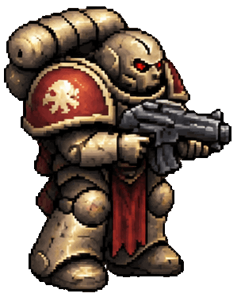

ART-02 / КАДРЫ / ИГРОВОЙ СПРАЙТ
Утверждённый цикл ходьбы: восемь отдельных нарисованных поз. Без растягивания ног и деформации текстуры.
Один ракурс и отражение влево. При остановке — неподвижная поза. Новые ракурсы вверх, вниз и со спины ещё не добавлены.
Загружаем изображение героя…